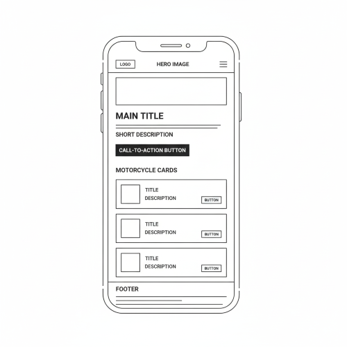
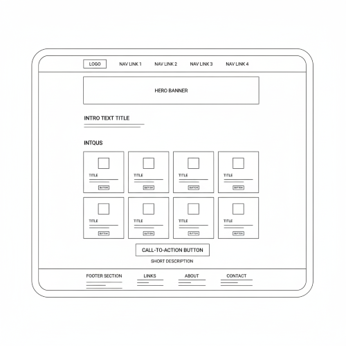

1. Site Name
Apex Riders
The name represents a centralized hub of motorcycle information powered by dynamic data. "Data" reflects the technical and modern approach of the website using a public API.
2. Site Purpose
Apex Riders is designed to provide motorcycle enthusiasts and potential buyers with detailed motorcycle specifications, comparisons, and insights. The site will dynamically display at least fifteen motorcycles using a public API, allow users to view detailed information in modals, and save favorite motorcycles using local storage.
3. Scenarios
- What is the best motorcycle for beginners?
- How can I compare engine size and weight between different models?
- Which motorcycle type fits my riding experience level?
- How can I save my favorite motorcycles for later review?
4. Color Scheme
- #0F172A (Dark Navy Blue) – Main background color
- #1E293B (Dark Slate) – Section backgrounds
- #FF2E63 (Neon Red) – Headings and accents
- #F1F5F9 (Soft White) – Main text color
5. Typography
- Orbitron – Used for headings (h1, h2, h3) for a futuristic look.
- Inter – Used for body text for readability.
6. Wireframe
Mobile View

Desktop View
